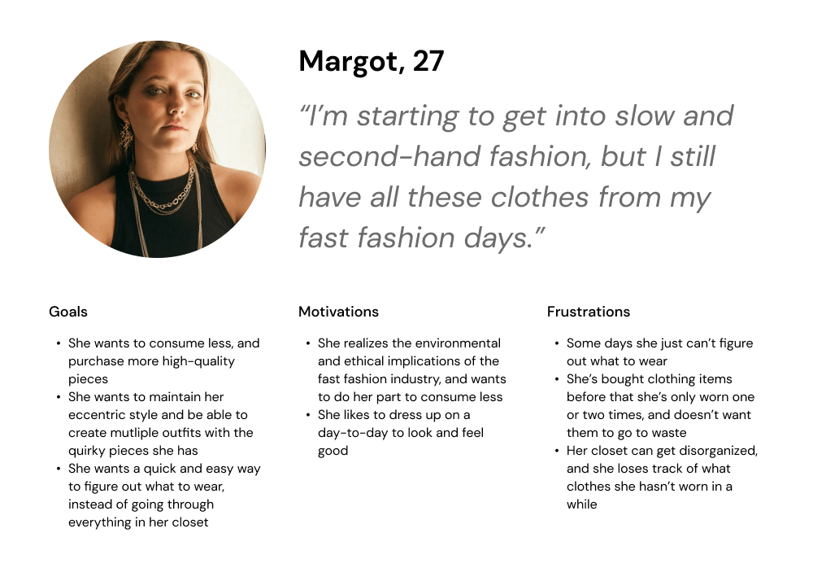
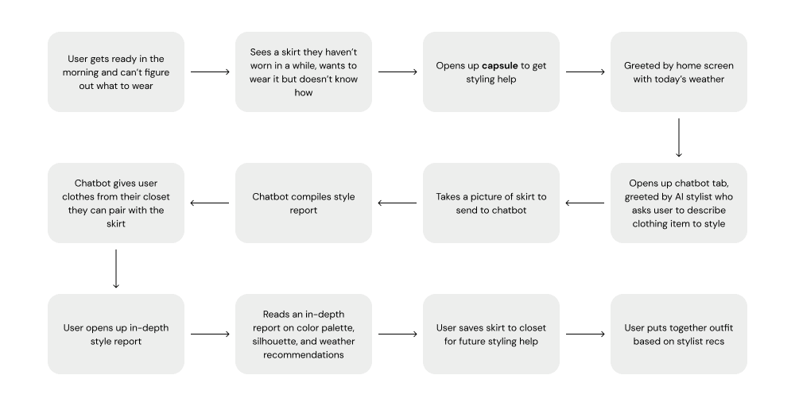

capsule
Project Type:
Personal
Strategies:
Research, Branding, UX/UI Design, Prototyping
Timeline:
Feb - May 2020
Tools used:
Figma
Project Type: Personal
Strategies: Research, Branding, UX/UI Design, Prototyping
Timeline: Feb - May 2020
Tools used: Figma
capsule is a mobile app that helps users style the clothes they already own.
Fashion companies and corporations produce millions of tons of textile waste every year, and produce lower quality clothes in the trendiest styles to get consumers to purchase more. Because of this, we are inclined to consume more clothes, whether or not we need it, or even really want it.
My goal was to set out and explore this issue of environmentalism and fashion. As a fashion lover and occasional trend-consumer myself, I decided to try to find a way to tackle this deeply-rooted and systemic issue on a more individual level.
Problem
Interested in fashion sustainability for a while at this point, I already have a few strong opinions on the topic: the best way we can be sustainable is to 1) reduce our consumption and to 2) love the clothes we own first.
With that in mind: How might we prioritize the longevity of the clothes we own first before purchasing new ones?
Research
To start my journey, I sent out a survey to groups and communities of fashion lovers to get a general idea of how they shopped for new clothes and rewear their current ones.
From there, I reached out to a few individuals from the surveys for a more deeper dive. With each person we had a conversation on how they view fashion sustainability, how they pick out what to wear for the day, and where they shop for clothes. Some noticeable patterns from these interviews were:
- Most people do not mind rewearing outfits
- A lot of people got style inspiration from all over the place: social media, television, friends, etc.
- Weather plays a huge factor in how people dress for the day
- When getting for the day, a lot of people liked to start with one piece they want to wear, and then style the rest of their outfit based on that
- Most agree that fashion fashion is bad for the environment, but understand the need for it for financial and accessibility purposes
- Surprisingly, a few people have their own tracking system to document their clothes and when they've worn them!
Discovery
After my research, I was able to narrow a direction I wanted this project to go into. Knowing that some of my interviewees had an interest in tracking their clothes, I knew there was potential for a digital product that could expedite that process.
Persona
I created a persona, Margot, based on my user interviews.
Competitive Analysis
Next, I looked at other fashion-related products already in the market. I looked at three pretty different, but all-fashion focused apps: Cladwell, Pinterest, and StyleHacks. Each app had a different approach to giving style inspiration to users, but only some had a focus on sustainability, and none of them seem to emphasize the issues with overconsumption, which is something I want my product to tackle.
User Journey
I sketched out a user journey to get an idea of how the user would incorporate this app into their morning routine.
Design
capsule wardrobe \'kap-səl 'wȯr-,drōb\ (noun) - a limited, curated collection of clothing, shoes and accessories that can help you live simply while reducing decision fatigue.
capsule is a mobile app that helps fashion lovers style the clothes they already own. During those days where you just feel like you have nothing to wear, you can use capsule to help you put together an outfit using basic styling techniques like color palettes, silhouettes, and the user's weather. capsule's goal is to give you inspiration that doesn't rely on current trends and what other people have worn. The best part, we don't need to know your entire wardrobe to help you out!
Styleguide
Primary font

Secondary font
Color palette
capsule logo
Prototype
Features include a home page with the weather and daily closet inspo, a chatbot where users can get styling help, a closet where users can store clothes they uploaded/styled, notifications to encourage users to add the clothes they've uploaded/styled to their closet, and user profile page to change settings and personal information.
New Users
Regular capsule users will be able to get styling inspiration with the clothes they already uploaded to the app. However, the main goal of capsule is to not overwhelm the user, so users can choose not to store anything in their closet and still get all the help they need!
Home
Chatbot
Closet
Conclusion
For my next steps, I had a few features in mind that unfortunately I wasn't able to implement for this version. The first one was a tab for outfit documentation. I had explored the design for that a bit, and knew based on my user interviews that this could have been a potential feature that users would want, but ultimately scrapped it to focus more on the styling features. I also originally wanted to include a chatbot feature where it could give outfit recs from scratch without needing a single clothing item as a starting point, but didn’t include that since I wanted to prioritize the aspect that the app could help without knowing your style.
Overall, this project was both challenging and therapeutic! It was easy to draw inspiration since I was part of the target audience, but also challenging to find an efficient and simple way to get my ideas across, since fashion has such a different experience for everyone.
This project is part of the IDM showcase for Spring 2021. Please feel free to check out some other projects!